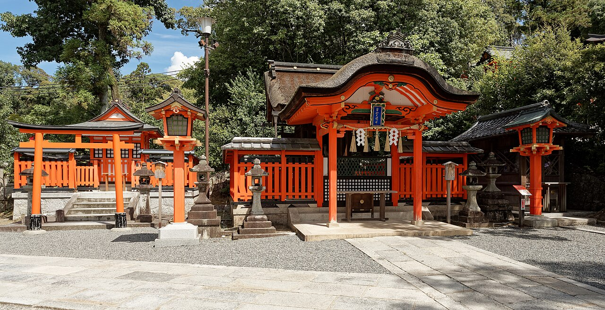

伏見稻荷大社伏見稲荷大社
稻荷神的總本社，以綿延稻荷山的千本鳥居聞名

基本資料
| 項目 | 內容 | 來源 |
|---|---|---|
| 日文名稱 | 伏見稲荷大社 | [1] |
| 讀音 | ふしみいなりたいしゃ | [1] |
| 所在地 | 京都府京都市伏見區，位於稻荷山山麓 | [1] |
| 主祭神 | 宇迦之御魂大神為首的諸位稻荷神 | [1] |
| 創建年代 | 相傳為 711 年（和銅 4 年）2 月 19 日 | [1] |
| 社格 | 式內社（名神大社）、二十二社（上七社）之一；舊社格為官幣大社，現為不屬於神社本廳的單立神社 | [1] |
由來與歷史
伏見稻荷大社位於稻荷山山麓，傳統上整座稻荷山都被視為神域[1]。相傳在奈良時代的 711 年，伊侶具秦公奉命於稻荷山設置神社，祭祀秦氏世代的守護神，同時也是農耕之神的稻荷神，神社名為「伊奈利社」[1]。
神社的世襲神職家族曾出過多位學者，以江戶時代中期的國學者荷田春滿最為知名。境內保存了他的舊宅，旁邊的東丸神社原本是為祭祀他而設，後來獨立出來[1]。現存的舊社家為大西家[1]。
最初的本殿在應仁之亂時燒毀，現在的本殿是明應 8 年（1499 年）重建的，目前被指定為國家重要文化財[1]。2010 年的統計中，伏見稻荷大社是日本國內初詣參拜人數第 4 名，也是近畿地區參拜者最多的社寺[1]。
祭神與信仰
伏見稻荷大社主要祀奉以宇迦之御魂大神為首的諸位稻荷神，另配祀佐田彥大神、大宮能賣大神、田中大神與四大神[1]。神社自古是農業與商業的神明，香客為了農作豐收、生意興隆與交通安全前來祈願，使它成為京都香火最盛的神社之一[1]。
境內看點
- 千本鳥居：許願的人會捐款豎立鳥居，這個習俗起於江戶時代。現存最早的鳥居可追溯到明治年間，捐獻者包括個人、公司行號與各地商會[1]。
- 狐狸雕像與狐狸繪馬：境內可見許多狐狸雕像，也有造型特殊的狐狸繪馬[1]。
- 東丸神社與繪馬牆：東丸神社前的小徑旁，牆上掛滿繪馬，是長年來求考運的學子為了祈福而懸掛的[1]。
- 荷田春滿舊宅：境內保存的舊宅，與東丸神社相關[1]。
參拜小提醒
- 交通：JR 稻荷站與大社入口僅隔一條街；京阪電鐵伏見稻荷站步行約 5 分鐘；從京都站搭乘市內公車南 5 或 105 號線，下車後步行約 7 分鐘。（依維基百科資料，擷取日期 2026-11-16）[1]
- 一般參拜方法見 參拜方式。
來源
- 中文維基百科，〈伏見稻荷大社〉